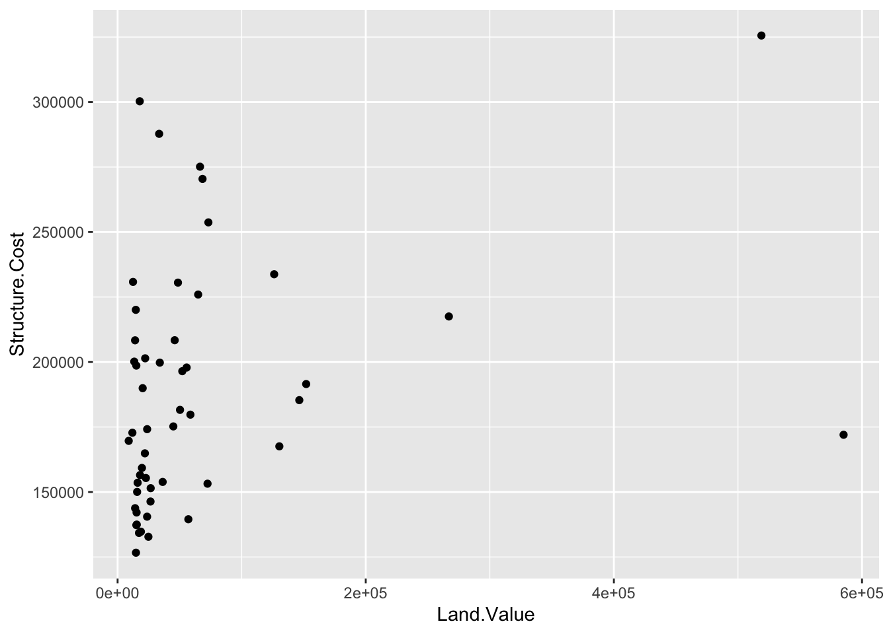
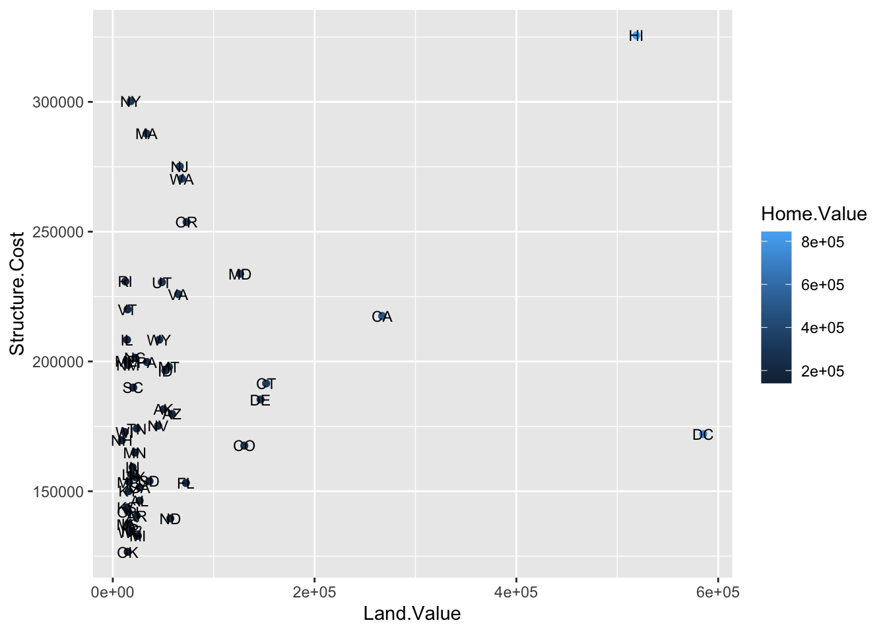
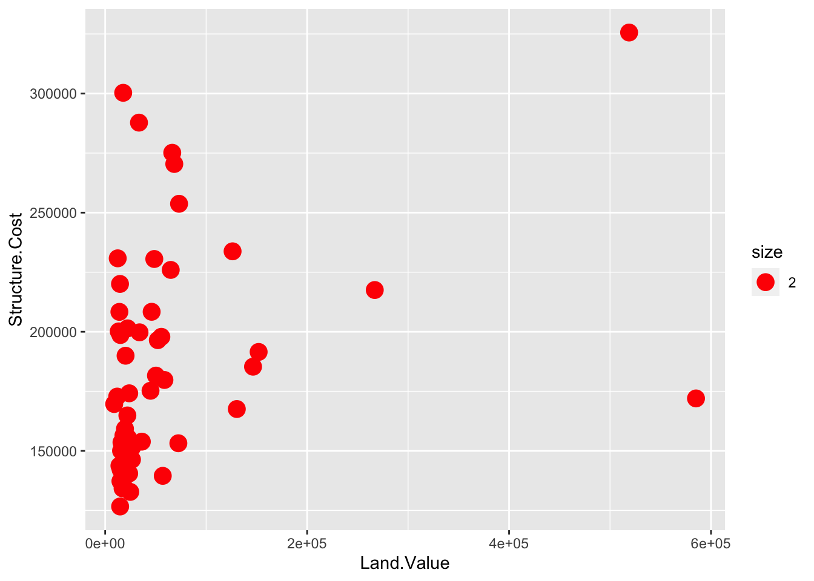
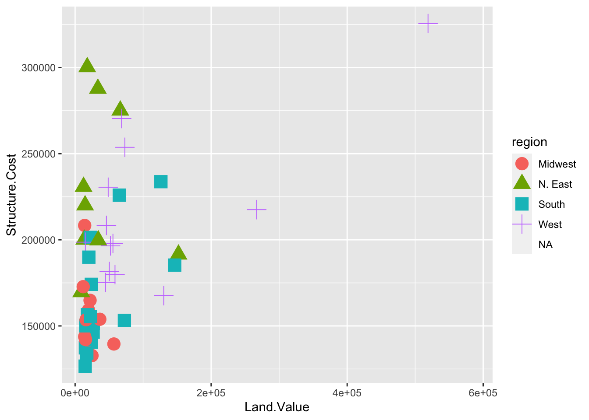
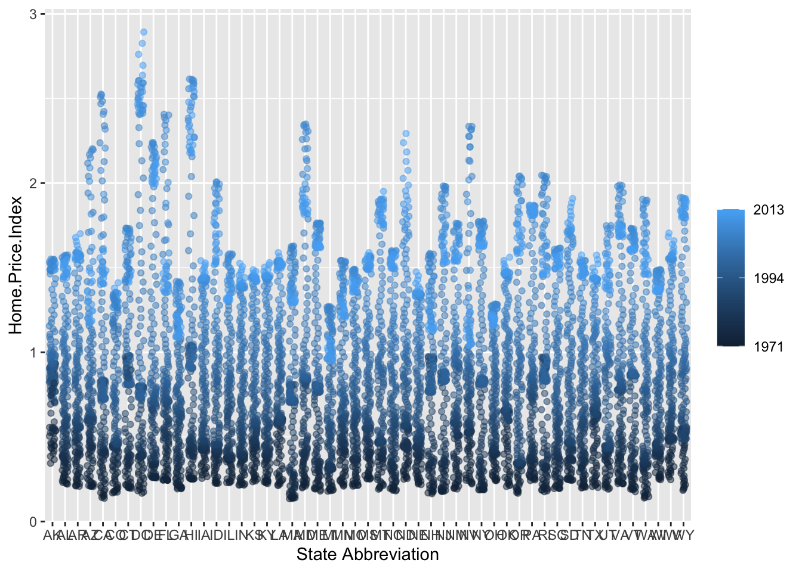
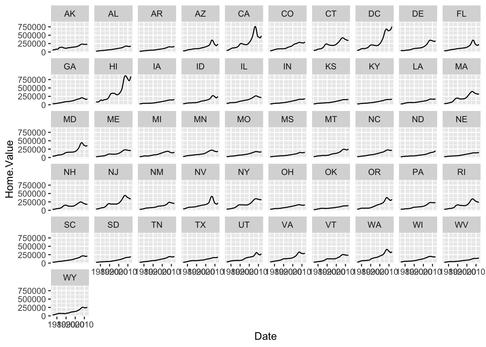
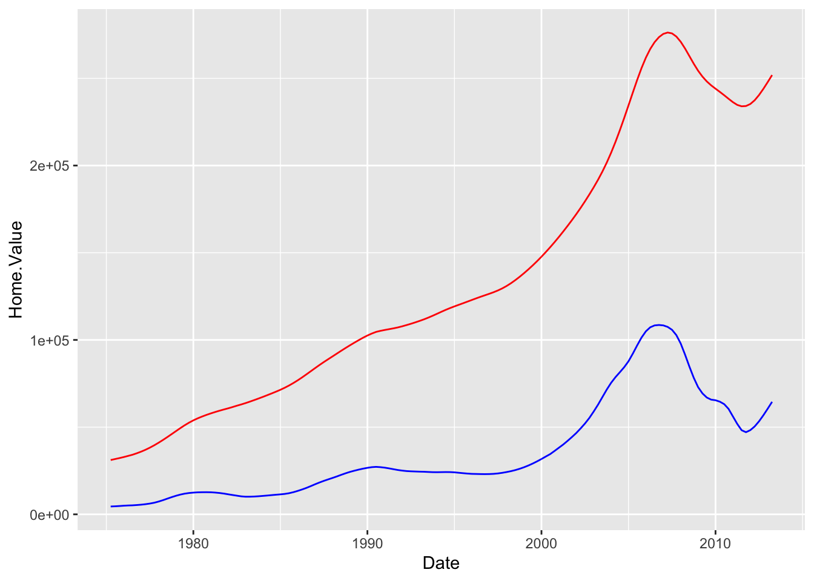
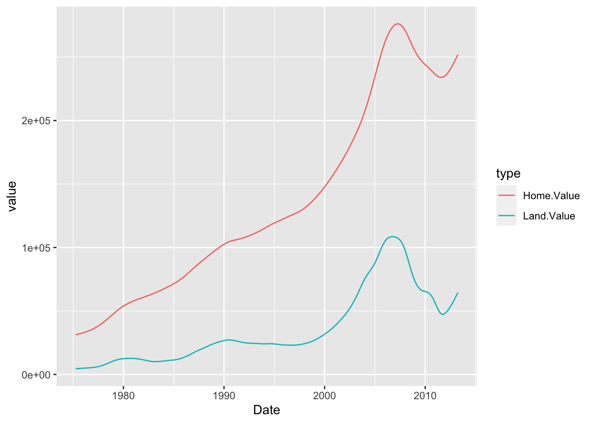

Crash Course in ggplot2
Introduction
Goal: by the end of this lab, you will be able to use ggplot2 to build several different data-driven graphics.
Setting up
Remember: before we can use a library like ggplot2, we have to load it:
library(ggplot2)Why ggplot2?
Advantages of ggplot2
- consistent underlying grammar of graphics (Wilkinson, 2005)
- plot specification at a high level of abstraction
- very flexible
themesystem for polishing plot appearance (more on this later)- mature and complete graphics system
- many users, active mailing list
What Is The Grammar Of Graphics?
The big idea: independently specify plot building blocks and combine them to create just about any kind of graphical display you want. Building blocks of a graph include:
- data
- aesthetic mappings
- geometric objects
- statistical transformations
- scales
- coordinate systems
- position adjustments
- faceting
Using ggplot2, we can specify different parts of the plot, and combine them together using the + operator.
Example Data: Housing prices
Let’s start by taking a look at some data on housing prices:
housing <- read.csv("https://jcrouser.github.io/MassMutual-DataVis/datasets/landdata-states.csv",
header = T)
glimpse(housing)## Observations: 7,803
## Variables: 11
## $ State <fct> AK, AK, AK, AK, AK, AK, AK, AK, AK, AK, AK, A...
## $ region <fct> West, West, West, West, West, West, West, Wes...
## $ Date <dbl> 2010.25, 2010.50, 2009.75, 2010.00, 2008.00, ...
## $ Home.Value <int> 224952, 225511, 225820, 224994, 234590, 23371...
## $ Structure.Cost <int> 160599, 160252, 163791, 161787, 155400, 15745...
## $ Land.Value <int> 64352, 65259, 62029, 63207, 79190, 76256, 729...
## $ Land.Share..Pct. <dbl> 28.6, 28.9, 27.5, 28.1, 33.8, 32.6, 31.3, 29....
## $ Home.Price.Index <dbl> 1.481, 1.484, 1.486, 1.481, 1.544, 1.538, 1.5...
## $ Land.Price.Index <dbl> 1.552, 1.576, 1.494, 1.524, 1.885, 1.817, 1.7...
## $ Year <int> 2010, 2010, 2009, 2009, 2007, 2008, 2008, 200...
## $ Qrtr <int> 1, 2, 3, 4, 4, 1, 2, 3, 4, 1, 2, 2, 3, 4, 1, ...(Data from https://www.lincolninst.edu/subcenters/land-values/land-prices-by-state.asp)
Geometric Objects and Aesthetics
Geometric Objects (geom)
Geometric objects or geoms are the actual marks we put on a plot. Examples include:
- points (
geom_point, for scatter plots, dot plots, etc) - lines (
geom_line, for time series, trend lines, etc) - boxplot (
geom_boxplot, for, well, boxplots!) - … and many more!
A plot must have at least one geom; there is no upper limit. You can add a geom to a plot using the + operator.
You can get a list of available geometric objects by looking at the package documentation, available through the help interface:
?ggplot2or simply type geom_<tab> in any good R IDE (such as Rstudio) to see a list of functions starting with geom_.
Aesthetic Mapping (aes)
In ggplot2-land, aesthetic means “something you can see”. Examples include:
- position (i.e., on the x and y axes)
- color (“outside” color)
- fill (“inside” color)
- shape (of points)
- line type
- size
Each type of geom accepts only a subset of all aesthetics – refer to the geom help pages to see what mappings each geom accepts. Aesthetic mappings are set with the aes() function, short for aesthetic.
Points
Now that we know about geometric objects and aesthetic mapping, we’re ready to make our first ggplot: a scatterplot. We’ll use geom_point to do this, which requires aes mappings for x and y; all others are optional.
hp2013Q1 <- housing %>% filter(Date == 2013.25)
ggplot(hp2013Q1,
aes(y = Structure.Cost, x = Land.Value)) +
geom_point()
Lines
A plot constructed with ggplot can have more than one geom. In that case, the mappings established in the ggplot() call are plot defaults that can be added to or overridden. For example, we could add a regression line to our plot:
p1 <- ggplot(hp2013Q1, aes(x = Land.Value, y = Structure.Cost))
p1 + geom_point(aes(color = Home.Value)) +
geom_smooth(method="lm")Smoothers
Not all geometric objects are simple shapes – the smooth geom includes both a line and a ribbon.
p1 +
geom_point(aes(color = Home.Value)) +
geom_smooth()
Removing standard errors
p1 +
geom_point(aes(color = Home.Value)) +
geom_smooth(se=FALSE)
Text
Each geom accepts a particualar set of mappings–for example geom_text() accepts a labels mapping.
p1 +
geom_text(aes(label=State), size = 3)
Aesthetic Mapping VS Assignment
Note that variables are mapped to aesthetics with the aes() function, while fixed aesthetics are set outside the aes() call. This sometimes leads to confusion, as in this example:
p1 +
geom_point(aes(size = 2), # incorrect! 2 is not a variable
color="red") # this is fine -- turns all points red
Mapping Variables to Other Aesthetics
Other aesthetics are mapped in the same way as x and y in the previous example.
p1 +
geom_point(aes(color = Home.Value,
shape = region))
Scales: Controlling Aesthetics
Aesthetic mapping (i.e., with aes()) only says that a variable should be mapped to an aesthetic. It doesn’t say how that should happen. For example, when mapping a variable to shape with aes(shape x)= you don’t say what shapes should be used. Similarly, aes(color z)= doesn’t say what colors should be used. Describing what colors/shapes/sizes etc. to use is done by modifying the corresponding scale. In ggplot2, scales include:
positioncolorandfillsizeshapelinetype
Scales are modified with a series of functions using a scale_<aesthetic>_<type> naming scheme. Try typing scale_<tab> to see a list of scale modification functions.
Common Scale Arguments
The following arguments are common to most scales in ggplot2:
name: the first argument specifies the axis or legend titlelimits: the minimum and maximum of thescalebreaks: the points along the scale where labels should appearlabels: the text that appear at each break
Specific scale functions may have additional arguments; for example, the scale_color_continuous function has arguments low and high for setting the colors at the low and high end of the scale.
Scale Modification Examples
Start by constructing a dotplot showing the distribution of home values by Date and State.
p3 <- ggplot(housing,
aes(x = State,
y = Home.Price.Index))
p4 <- p3 + geom_point(aes(color = Date),
alpha = 0.5,
size = 1.5,
position = position_jitter(width = 0.25, height = 0))Now let’s modify the breaks and labels for the x axis and color scales:
p4 + scale_x_discrete(name = "State Abbreviation") +
scale_color_continuous(name = "",
breaks = c(1975.25, 1994.25, 2013.25),
labels = c(1971, 1994, 2013))
Next change the low and high values to blue and red:
p4 +
scale_x_discrete(name = "State Abbreviation") +
scale_color_continuous(name = "",
breaks = c(1975.25, 1994.25, 2013.25),
labels = c(1971, 1994, 2013),
low = "blue", high = "red")Using different color scales
ggplot2 has a wide variety of color scales; here is an example using scale_color_gradient2 to interpolate between three different colors:
p4 +
scale_color_gradient2(name = "",
breaks = c(1975.25, 1994.25, 2013.25),
labels = c(1971, 1994, 2013),
low = "blue",
high = "red",
mid = "gray60",
midpoint = 1994.25)
Available Scales
Here’s a (partial) combination matrix of available scales:
| Scale | Types | Examples |
|---|---|---|
scale_color_ |
identity |
scale_fill_continuous |
scale_fill_ |
manual |
scale_color_discrete |
scale_size_ |
continuous |
scale_size_manual |
discrete |
scale_size_discrete |
|
scale_shape_ |
discrete |
scale_shape_discrete |
scale_linetype_ |
identity |
scale_shape_manual |
manual |
scale_linetype_discrete |
|
scale_x_ |
continuous |
scale_x_continuous |
scale_y_ |
discrete |
scale_y_discrete |
reverse |
scale_x_log |
|
log |
scale_y_reverse |
|
date |
scale_x_date |
|
datetime |
scale_y_datetime |
Note: in RStudio, you can type scale_ followed by TAB to get the whole list of available scales.
Faceting
- Faceting is
ggplot2parlance for small multiples - The idea is to create separate graphs for subsets of data
ggplot2offers two functions for creating small multiples:facet_wrap(): define subsets as the levels of a single grouping variablefacet_grid(): define subsets as the crossing of two grouping variables
- Facilitates comparison among plots, not just of
geomswithin a plot
Example: what is the trend in housing prices in each state?
Let’s start by using a technique we already know – map State to color:
p5 <- ggplot(housing, aes(x = Date,
y = Home.Value))
p5 + geom_line(aes(color = State)) There are two problems here–there are too many states to distinguish each one by color, and the lines obscure one another.
Faceting to the rescue!
We can fix the previous plot by faceting by state rather than mapping state to color:
(p5 <- p5 + geom_line() +
facet_wrap(~State, ncol = 10))
There is also a facet_grid() function for faceting in two dimensions.
The #1 FAQ
Map Aesthetic to Different Columns
The most frequently asked question goes something like this: I have two variables in my data.frame, and I’d like to plot them as separate points, with different color depending on which variable it is. How do I do that?
First try: draw two separate lines
housing_byyear <- aggregate(cbind(Home.Value, Land.Value) ~ Date, data = housing, mean)
ggplot(housing_byyear,
aes(x=Date)) +
geom_line(aes(y = Home.Value), color="red") +
geom_line(aes(y = Land.Value), color="blue")
This is not so great, because if I later add another dimension, I’ll have to remember that I hard-coded these lines separately.
A tidier way:
First we’ll gather up the values we want to plot:
library(tidyr)
home_land_byyear <- gather(housing_byyear,
value = "value",
key = "type",
Home.Value, Land.Value)Then we’ll plot them:
ggplot(home_land_byyear,
aes(x = Date,
y = value,
color = type)) +
geom_line()
Much cleaner!
This lab is based on the “Introduction to R Graphics with ggplot2” workshop, which is a product of the Data Science Services team Harvard University. The original source is released under a Creative Commons Attribution-ShareAlike 4.0 Unported. This lab was adapted for SDS192: and Introduction to Data Science in Spring 2017 by R. Jordan Crouser at Smith College, and for the MassMutual data visualization workship in Summer 2017 by Amelia McNamara.